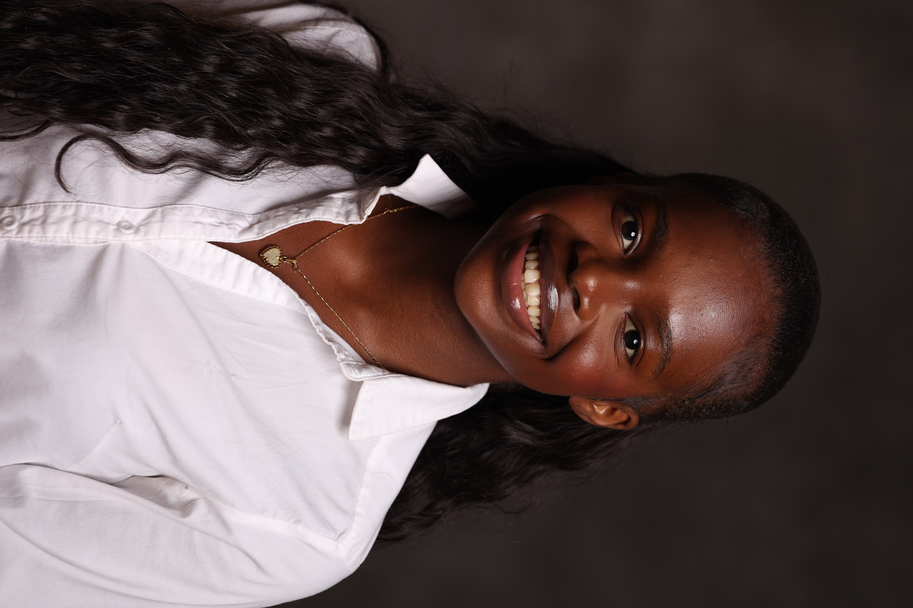

Greetings! I'm Celeste St. Louis, a passionate storyteller focused on public relations, brand strategy, and community engagement within the entertainment industry. My academic journey at Lincoln University combines Strategic Communications with real-world media experience, and as a Dean's List student, I bring both academic rigor and hands-on skill to every project I take on.
As a member of the Office of Public Relations and Communications at Lincoln University of Pennsylvania, I have had the honor of contributing to projects that help transform our school's public image and build a legacy that positions Lincoln as the blueprint for HBCUs.
I am also the Co-Creative Director of Inside the Den, our campus sports media podcast, where I lead content strategy and production for stories celebrating achievement and advocacy in athletics.
Outside of work and academics, I proudly serve as the 2026 Miss Omega Psi Phi for the Beta Chapter of Omega Psi Phi Fraternity, Inc., where I act as a public-facing brand ambassador and campus leader. I'm eager to build a career in public relations for the sports and entertainment industries.
A comprehensive overview of my leadership, media production, and strategic communications work.
Behind every great story is a strategy. I help plan and shape content for Inside the Den, the only student-led media hub from concept to execution, including coverage of special school events that highlight the energy and pride of Lincoln University.
Contributing to strategic messaging and public image transformation at Lincoln University of Pennsylvania.
Co-Creative Director leading content strategy, production, and storytelling for campus athletics.
Serving as a public-facing brand ambassador and campus leader for the Beta Chapter, championing community engagement, leadership, and outreach.
A collection of visual concepts, event promotions, graphic designs, and digital media that bring ideas, experiences, and brands to life.
Strategic campaigns, brand positioning initiatives, and promotional frameworks designed to build audience engagement and elevate organizational impact.
Interested in working together or discussing opportunities in sports and entertainment PR? Reach out!